IN THE GARDEN
OF THE LORD.
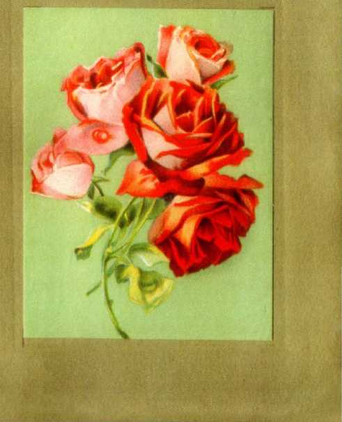Gertrude W. Seiberh
BIBLE AND TRACT SOCIETY
BROOKLYN TABERNACLE. NEW YORK
Printed by i.aiir Baden
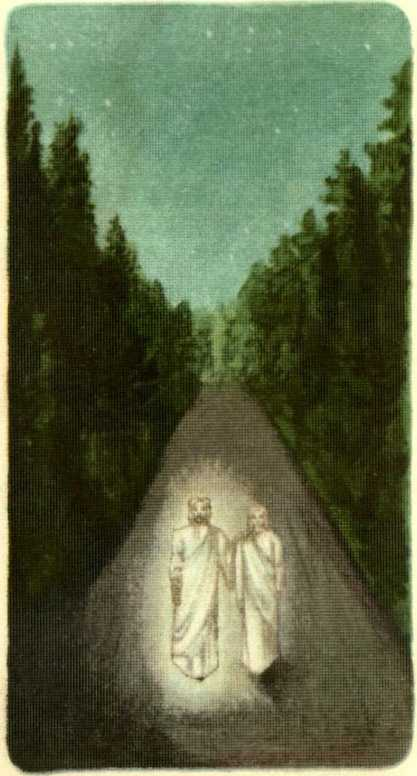the Master came to me
came to me
Beloved, lay thy cross
aside, and come with Me awhile, For I would have thee a ia
rest within the Garden of the Lord.”
And then
J
''i I T
Until we came to
j
; where &
massive gateway
J C7 J
barred our path.?.
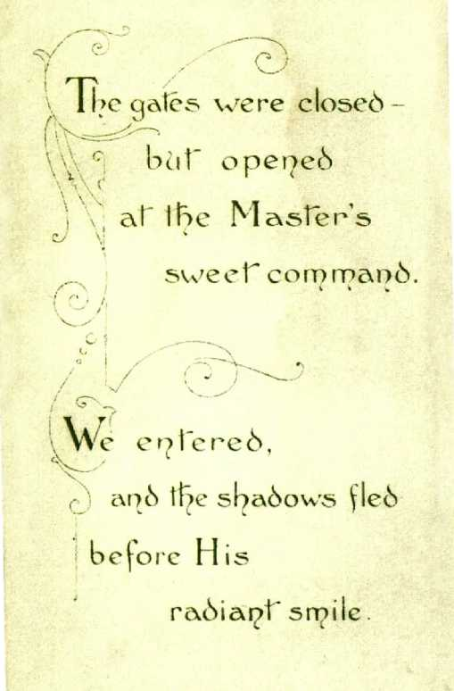■k ___JZ7
G)
• f A passion flower,
\ sad symbol
'=S<^/ £ H'
<x? of riis
f V
v ■ j dying agony
Entwined itself
V
with orchids rare, t c
' fair children
of' the air.
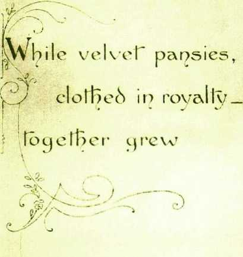■witt? Ljovelv.
sweet peas.
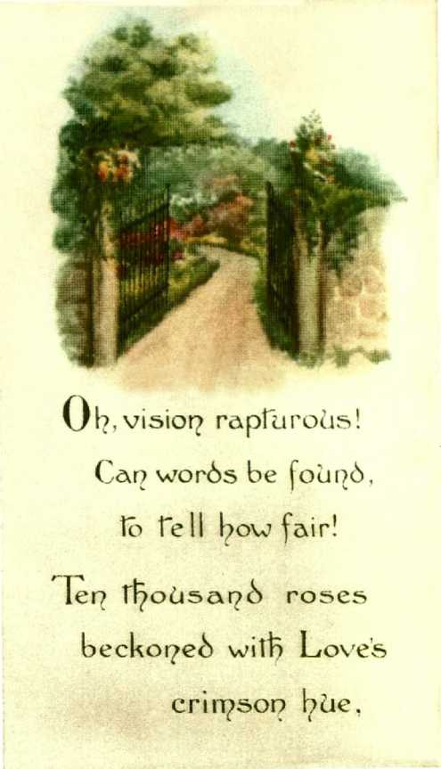air
ue
creeping
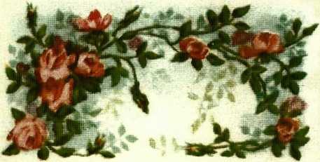And round about our feet?
The violets nestled in their
*■ * <
purple leaves.
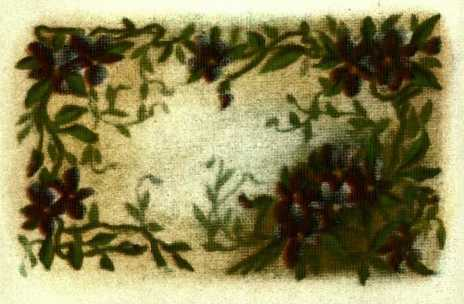And close beside, 1 he lilies o| the valley be pt" in
sweet""
humility.
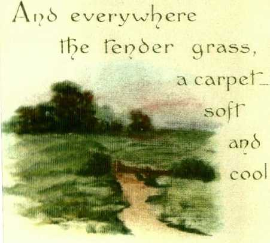upon sorqe drooping flower,
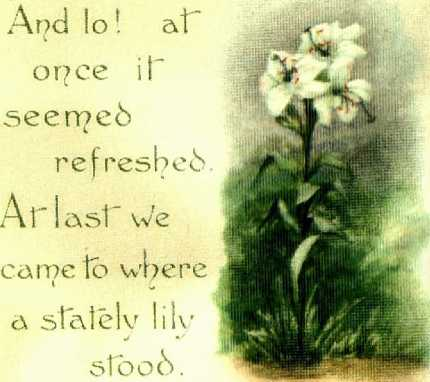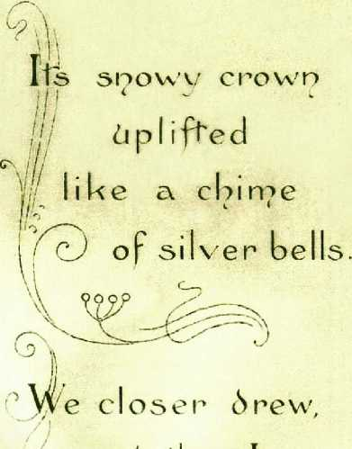(p ano men I saw;
' alas ’ bo\\'
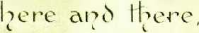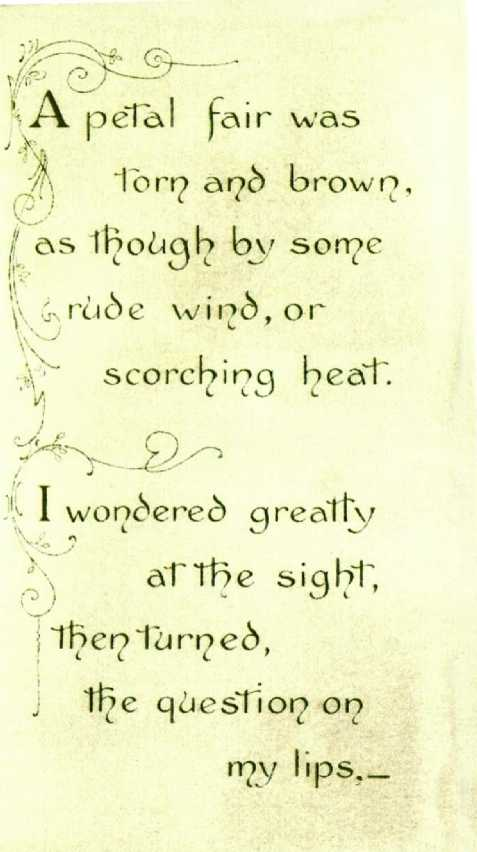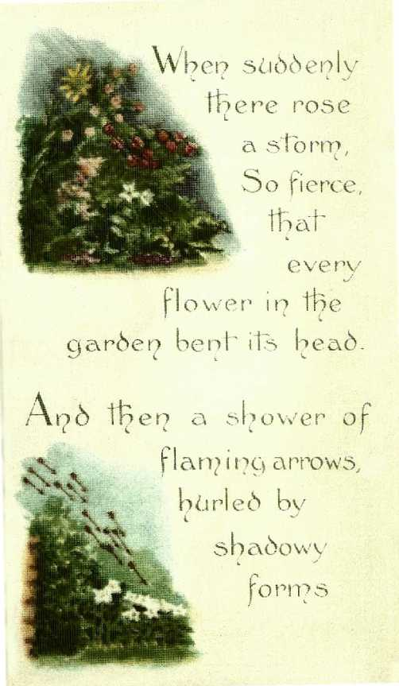Outside the gardens ivy-covered walls, rained down upon the lilies, _ while 1
clinging terror to ipv Heavenly Guide.
Peace,
I He slorn?
The tempest ceased and there 4 k
was calm.
The wondrous light grew dim, the garden vanished, and 1 woke.
L
The Master had not C i 1
spoken this. a nd yef I seemed to know,
The fair dream - garden was a picture of His “ little ones?
He neither sleeps nor slumbers
I
i n 111 s watch-care over these.
I
And then the thought-If in this garden
I might choose my place, wo ci Id I be I i k e the rose ’?
Ab no! IesTi n rny passionate zeal To sl^ow by works rr?v bearh of love,
-J I
I sbocikS forget" ii?e thorns,
Dear I_'Ord,and wound The 4.
The loving
and sod nd I hv blessed Iriiib o'er land and sea
in cleartoned eloquence.
Ab no, _ I might' not' bear the storms that' beatupon the one whose bead
Faces uplifted uplifted far above his fellows,-
And shining mark
fo r S a taf? s barts.
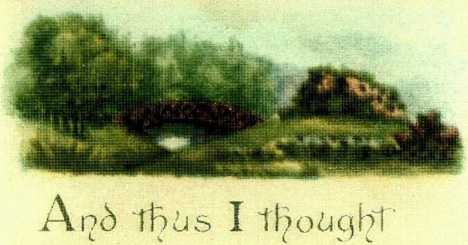for each and all t L L
I the garden’s lovely
ones, --
1 her? cried _
”My blessed Lord,
if I might choose, only let me be the
Tender grass__
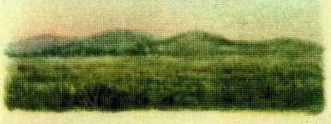